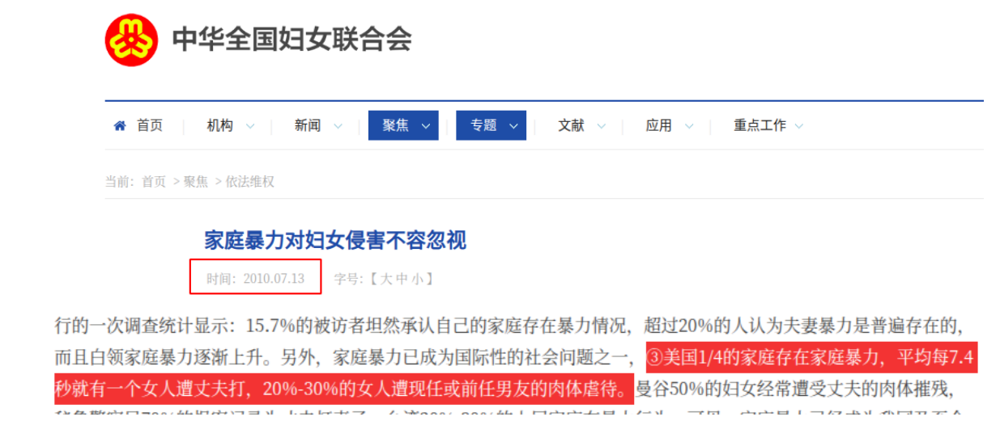
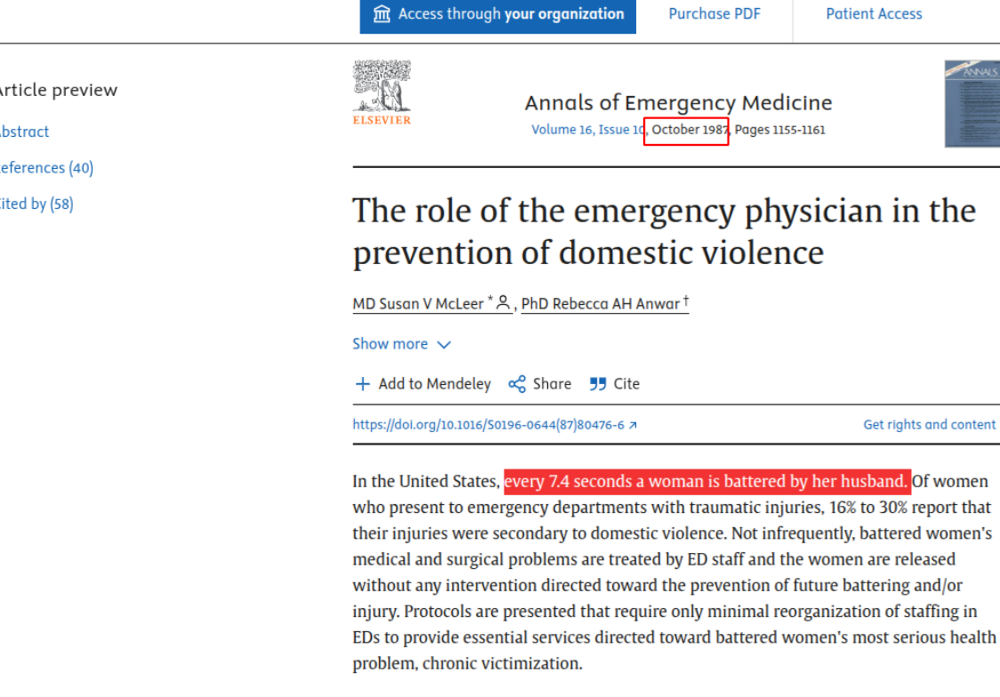
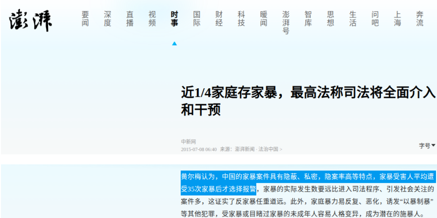
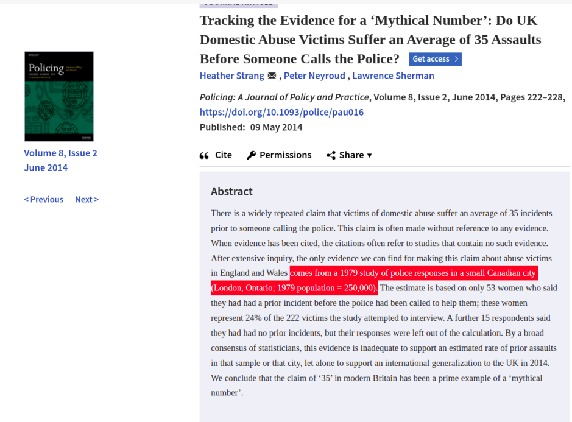

极端女权造谣方法大赏（01）——把别人家的棺材搬到自己家哭
更新时间：2025年6月16日
实例1：每7.4秒就有一位妇女受到家暴？
来源于1987年美国的数据，最早被妇联2010年的一篇文章引用。文章链接
既然知道了来自哪个国家，那么追根溯源就简单了，来源是美国1987年的数据，估计这个数据出来的时候在座的各位都还没有出生
实例2：女性平均被家暴35次才报警？
这个数据国内最早被一个检察官引用
后来我在B站一个2016年的纪录片找到了具体来源：视频链接
还是那句话，有了数据来源，我溯源就方便多了，最终我发现这个数据来自加拿大1979年的调查，统计出了女性平均受虐35次才报警的结论，但调查质量很差，甚至都不足以估计那个小城市的数据。
好了，以上两个数据辟谣完成，我们看看这些谣言在国内的传播情况。
看到这里，相信大家也明白了一部分某些极端女权为了造谣是什么货色！
另一方面，她们为和如此不择手段地造谣？原因就在于，她们可以利用这些谣言，给男性发送赎罪券，以此“证明”男性在家庭里有压迫女性的原罪！我们首先了解一下什么是赎罪券：基督教强调“罪”的概念，人类从始祖亚当、夏娃违背上帝的旨意，开始堕落，犯有“原罪”，具有罪性。以后又不断违背上帝的规条，不断地产生罪行。上帝为了拯救人类，特意派他的独生子耶稣、也就是《旧约》中预言的基督降临人世，将上帝的旨意传达给人。上帝以耶稣被钉上十字架的方式来替人类赎罪。耶稣付上罪的代价以后，人类只要信靠基督耶稣、就可以赎罪得救。
而男性就是这其中的“人类”，她们通过数据造假，宣扬“男性是家暴的代名词，男性在家庭中有压迫女性的原罪等等等”反正说此千奇百怪。我用一种比较流行的说法：
“在一个神奇的国度，每天都会有许多新生儿，在那里的新生儿出生就需要交一笔税，为什么，因为男性带有在一个家庭里压迫女性，对女性实施暴力的原罪。（你别管有没有真的去做，反正就是有）此后，那个国度的男性能不能真的压迫女性了呢？不能，如果他真这么做了还要交一笔罚款”
听着是不是特别荒谬？但这个在现实中真的发生了.....
以23年的电影《我经过风暴》为例，这部电影也引用了【中国每7.4秒就有一位妇女受到家暴】的数据。如上文所说，这是美国1987年的数据，但是传着传着，就变成了“中国每7.4秒就有一位妇女受到家暴”。像是这种把别人家犯的错强行套到国男，然后让国男为此赎罪。

引用一位网友的一段话：
老中出事按头反思这种常规操作算什么？
美国出了问题，我都要算老中头上让中国男性反思！
抛开事实不谈，美国人有问题，难道你们老中就不该反思吗！！！
某些极端女权主义者的想法：家暴男的问题，你们正常人不应该反思吗？你们不反思我们怎么发赎罪券，怎么直播带货？